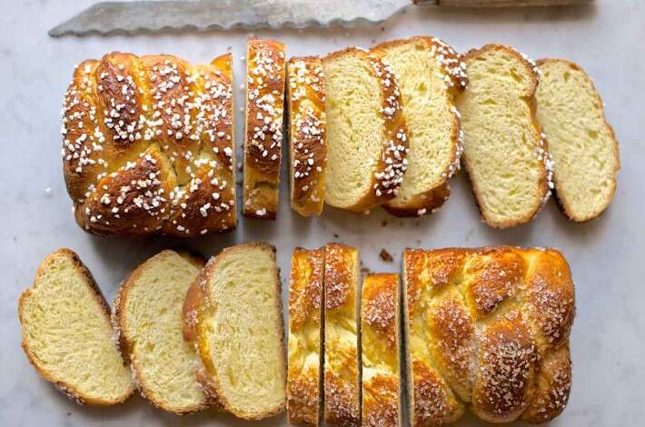

Brioche Bread

Descripton
This classic egg- and butter-rich bread is delightfully tender, perfect for shaped and filled sweet breads. While the shapes we offer here aren't traditional (French brioche is generally presented in topknot form, one small round nestled atop a larger one), we enjoy the versatility of making rolls, as well as loaves that slice nicely for toast — or truly exceptional French toast.
Ingredients
- 330g Unbleached All-Purpose flour
- 28g Nonfat dry mil
- 35g Sugar
- 8g Salt
- 1tbsp Instant yeast
- 3 Large eggs, cold from the refrigerator
- 57g Cool water
- 142g Unsalted butter, at cool room temperature, divided into 5 equal pieces
Steps
- Weigh your flour; or measure it by gently spooning it into a cup, then sweeping off any excess.
- To make the dough: In a stand mixer fitted with the dough hook attachment, mix together all the ingredients (except the butter) to make a smooth, stretchy dough that cleans the sides of the bowl; this should take 7 to 10 minutes at medium speed.
- Once the dough has developed some strength and elasticity, add one piece of the butter and mix at medium speed until it’s fully incorporated into the dough, 1 to 2 minutes. Scrape the bowl if necessary, then continue adding the butter one piece at a time, mixing to incorporate fully before adding the next piece. This dough takes longer than most to develop so be prepared to let the dough knead for another 5 to 10 minutes, or until it's formed a soft, smooth ball. We don't recommend trying to knead this dough by hand.
- Form the dough into a ball (it'll be very soft), place it in a greased bowl, cover the bowl, and it let rise for 1 hour. Then refrigerate the dough for several hours, or overnight. This will slow the fermentation and chill the butter, making the dough easier to shape.
- Divide the chilled dough into 12 pieces to make mini-brioche (brioche buns); leave it whole for one large round brioche; or divide it in half for two 8 1/2" x 4 1/2" loaves.
- Place the dough into the greased pan(s) of your choice, cover lightly, and let rise for 2 1/2 to 3 hours, until it's doubled and looks very puffy. If you're making two loaves, it's fun to make simple three-strand braids, and set them in the loaf pans.
- To bake a large, round brioche: Place the pan into a preheated 400°F oven. After 10 minutes, reduce the oven heat to 350°F and bake for about 30 to 35 minutes more. Check the brioche after 15 minutes; tent with aluminum foil if it appears to be browning too quickly. Brioche should be a deep brown when done, should sound hollow when tapped, and will read 190°F at the center using an instant-read thermometer. (It's easy to underbake since it browns so quickly!) Remove the brioche from the oven, and after 10 minutes remove it from the pan to cool completely on a rack.
- To bake the mini brioches: Place the pan(s) onto a baking sheet for easy handling, as shown; then nestle that baking sheet into another baking sheet, to protect the buns' bottoms from over-browning. Bake the buns in a preheated 375°F oven for 25 to 30 minutes (tent after 10 minutes if they're browning too quickly). Remove them from the oven, let stand for 5 minutes, then turn them out onto a rack.
- To bake the loaves: Allow the loaves to rise until they've nearly reached the rim of the pan, about 3 hours. Set the loaf pans on a baking sheet, for easy handling. Bake in a preheated 350°F oven for 30 to 35 minutes, tenting with foil after 15 to 20 minutes. Bake until the internal temperature reaches at least 190°F in the center, and up to 205°F for a crustier loaf.